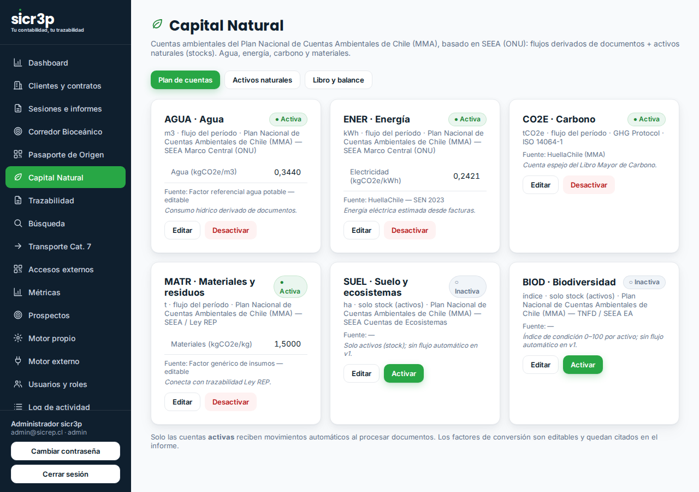
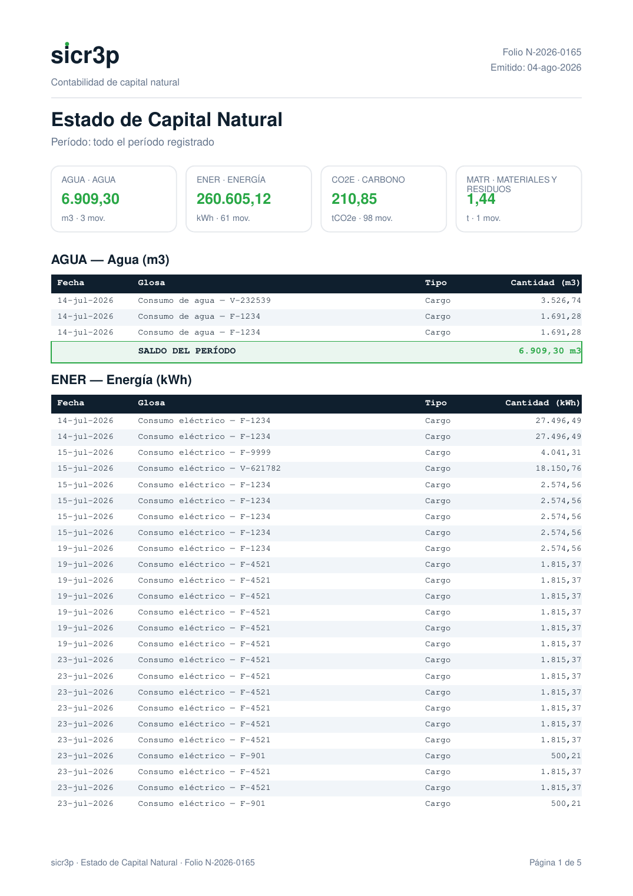

La mayoría de las plataformas tratan las emisiones como una lista. sicr3p las trata como contabilidad: cuentas, movimientos con respaldo, sello de integridad en cada asiento, y un Estado de Capital Natural que se lee como un balance — porque lo es.
Tu empresa ya sabe leer un balance. Capital Natural aplica esa misma disciplina al desempeño ambiental:
| Concepto contable | Su equivalente en Capital Natural |
|---|---|
| Plan de cuentas | Cuentas ambientales: carbono (CO2e), agua, energía, residuos, y las que tu operación necesite. |
| Asiento / movimiento | Cada evento ambiental registrado con fecha, cantidad, respaldo documental y — clave — hash encadenado: la historia no se puede reescribir sin que se note. |
| Activos | Activos ambientales valorizables (automático por precio de referencia, o manual con el criterio registrado). |
| Balance | El Estado de Capital Natural en PDF: saldos por cuenta, movimientos del período y verificación de integridad. |
La cuenta CO2e se alimenta sola: cada cálculo del motor de sicr3p genera su movimiento espejo en el Libro Mayor de Carbono. Las demás cuentas se registran desde el panel, con respaldo. Nada queda "en una planilla aparte".

El módulo en el panel: cuentas, movimientos y verificación de integridad (datos de demostración).
El entregable es un PDF con la seriedad de un estado financiero: saldos por cuenta, detalle de movimientos del período, activos valorizados con su criterio, y el sello de integridad de cada cadena de cuenta.

Estado de Capital Natural generado por el sistema (datos de demostración).
| Interlocutor | Qué obtiene |
|---|---|
| Directorio / gerencia | Una foto ambiental período a período con la misma gramática del balance financiero que ya revisan. |
| Financiamiento verde | Evidencia estructurada y verificable para postulaciones e informes a financistas. |
| Mandantes y compradores | Respaldo consistente detrás de los números que la empresa reporta hacia afuera. |
sicr3p SpA · Antofagasta, Chile
contacto@sicrep.cl · www.sicr3p.cl
sicr3p — Carpeta de servicio: Capital Natural · Versión 1.0 · Agosto 2026 · Material informativo comercial. sicr3p no es certificador, auditor ni autoridad.